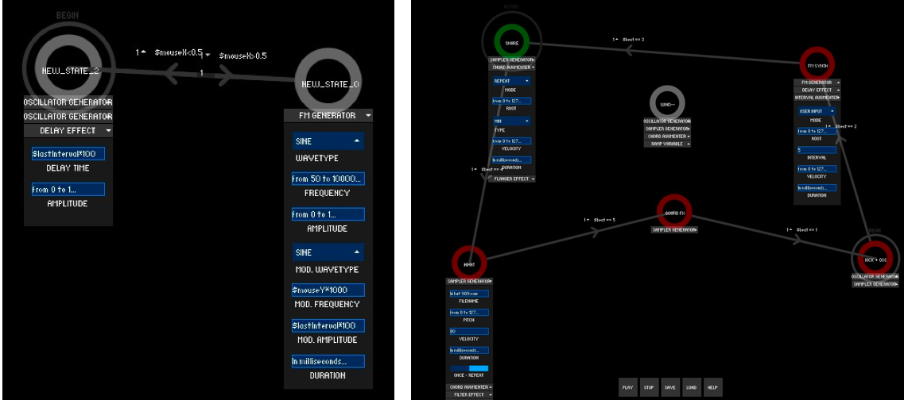
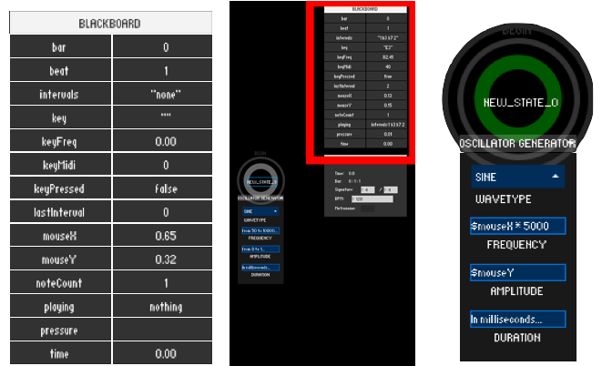
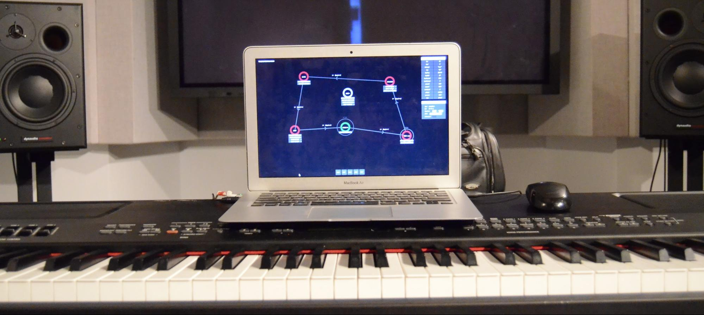
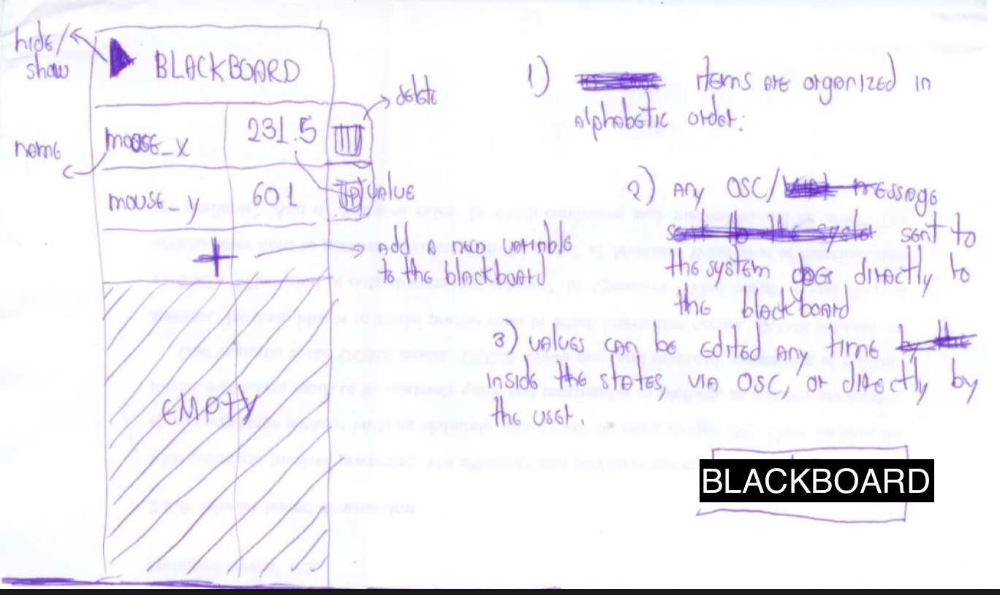
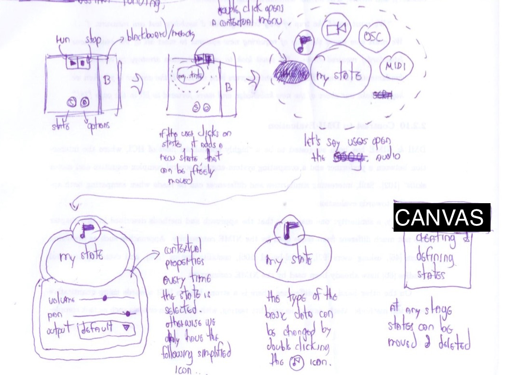
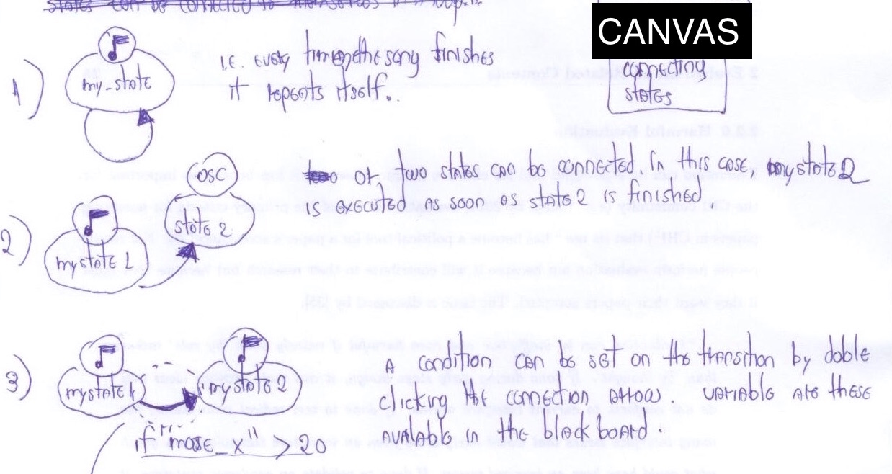
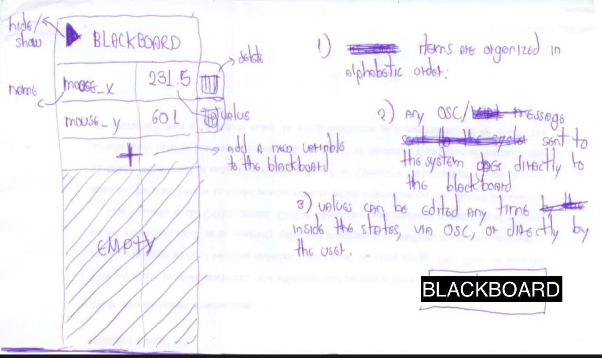
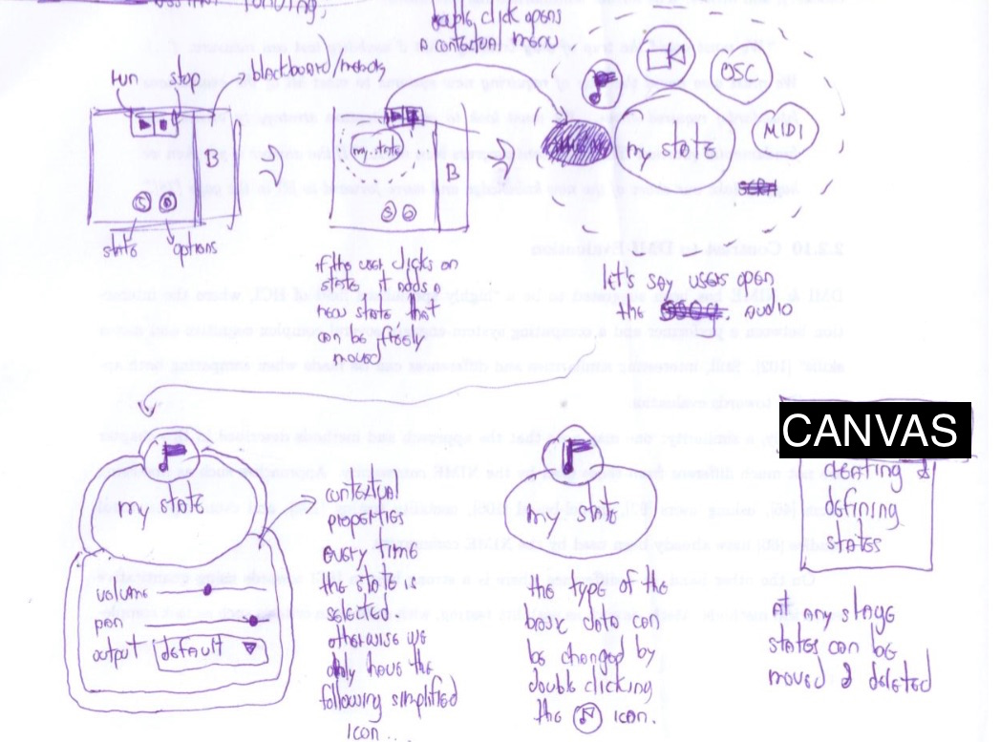
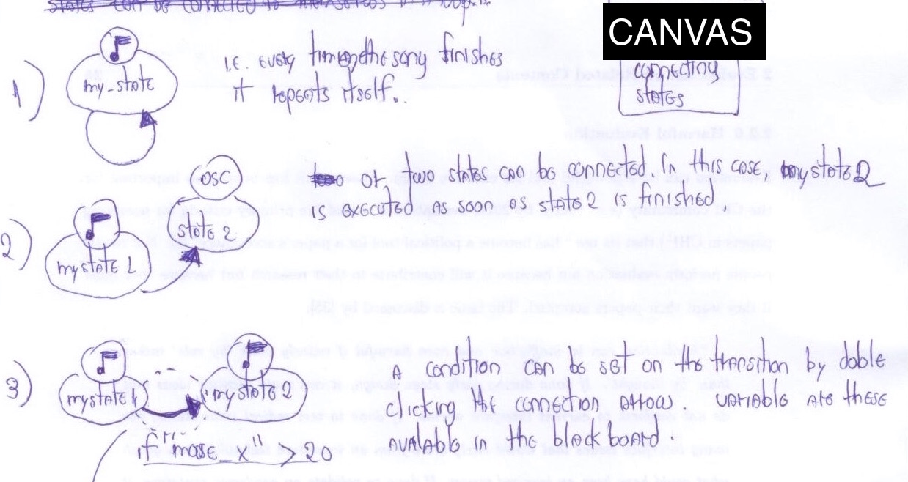

StateSynth is a direct manipulation-based music authoring environment where the keyboard becomes a central programming primitive, empowering musicians to build personal interactive musical tools based on their keyboard skills. For example:
  
How it works?
StateSynth uses a visual specification model based on hierarchical finite-states machines that was developed as part of my Ph.D. (details here). The model is called ZenStates:
A detailed introduction to StateSynth can be found on the next videos:
Musical Examples
Some musical experiments fully developed with StateSynth are:
Early sketches
 





StateSynth is open source, implemented in Java, using Processing as library for the graphics, Minim for sound synthesis, and JFugue for MIDI and music theory parsing. You can find more info about the project on my Ph.D. thesis (Chapter 6). Other related links are: